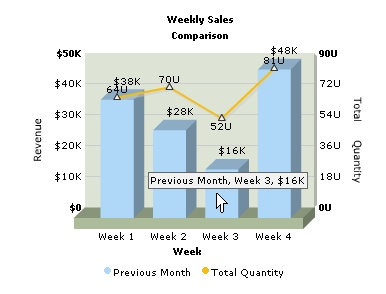
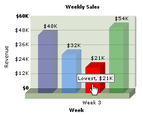

FusionCharts PHP Class API > Advanced Usage > Other Elements' Attributes |
FusionCharts PHP Class API lets you configure attributes of various chart elements like dataset, dataplot, categories etc. In this section we will see sample usage of those functions of FusionCharts PHP Class which help in achieving this. Topics include: |
| Provide categories attributes |
| Attributes which are specific to <categories> element can be set using setCategoriesParams function. We will pass a delimiter (default is ;) separated list of attributes to the function. |
| Example: |
| $FC->setCategoriesParams("font=Arial;fontSize=13;fontColor=ff0000"); |
| Provide attribute for each category |
| We can configure each category while adding a cetegory using addCategory function. This is done by passing category attributes as a list of delimiter separated attributes as the second parameter to the addCategory function. |
| Example: |
| $FC->addCategory("Week 1","hoverText=Sales for week 1"); $FC->addCategory("Week 2 ","hoverText=Sales for second week;showName=1"); $FC->addCategory("Week 3 ","showName=0"); |
| Provide dataset attributes |
| To provide dataset attributes we need to use the function - addDataset. It accepts the seriesName attribute of the dataset as its first parameter. The other parameter accepts a delimiter (defalut is ;) separated list of dataset attributes. |
| The example below will add 2 datasets for a combination chart. The first dataset with 'Previous Month' as seriesName, will be set to Primary Y-Axis and have $ as number prefix. The second dataset with 'Total Quantity' as seriesName, will be set to Secondary Y-Axis, have a number suffix U and tringular anchors. |
| $FC->addDataset("Previous Month","numberPrefix=$"); ... |
| The chart that follows is as shown below: |
|  |
| Provide attribute to each dataplot |
| setChartParams() function sets chart parameters globally. However, we may need to set specific properties to particular dataplot. To do so, we need to send the paramaters through addChartData() function while feeding data. Consider the code below: |
# Create a line chart object # add chart values and category names |
| Here, we provide different color and alpha values for each dataplot. We also hide the data values and category names of all the data plots except the third one. Again we put a link yo the third dataplot. |
|  |
| This way we can control individual dataplots of Line, Bar, Area and all other charts. |